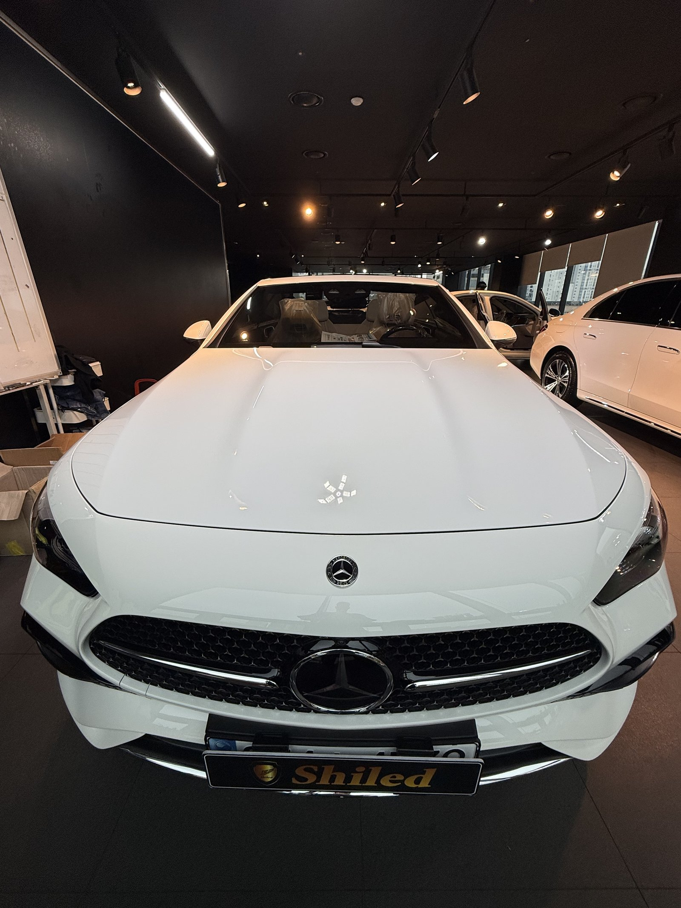
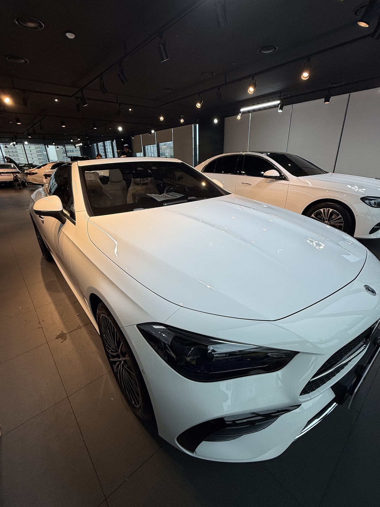
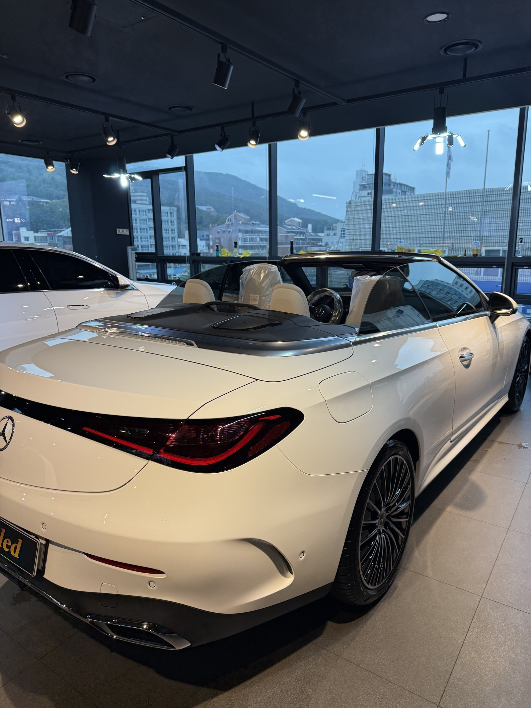
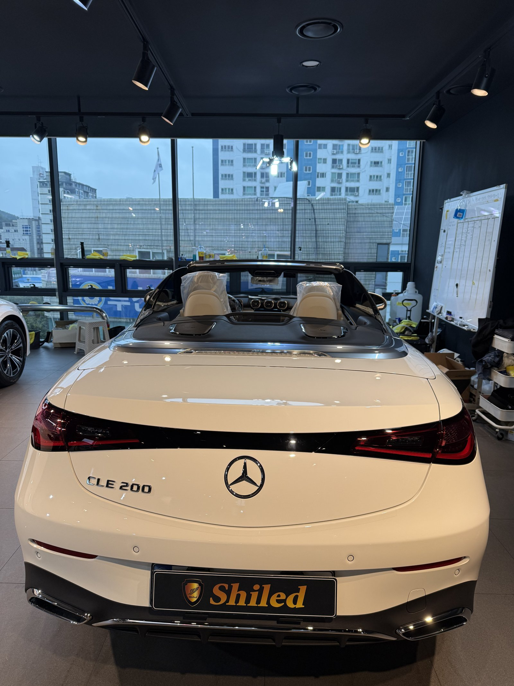
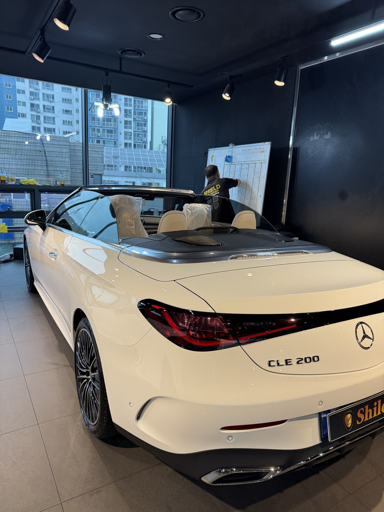
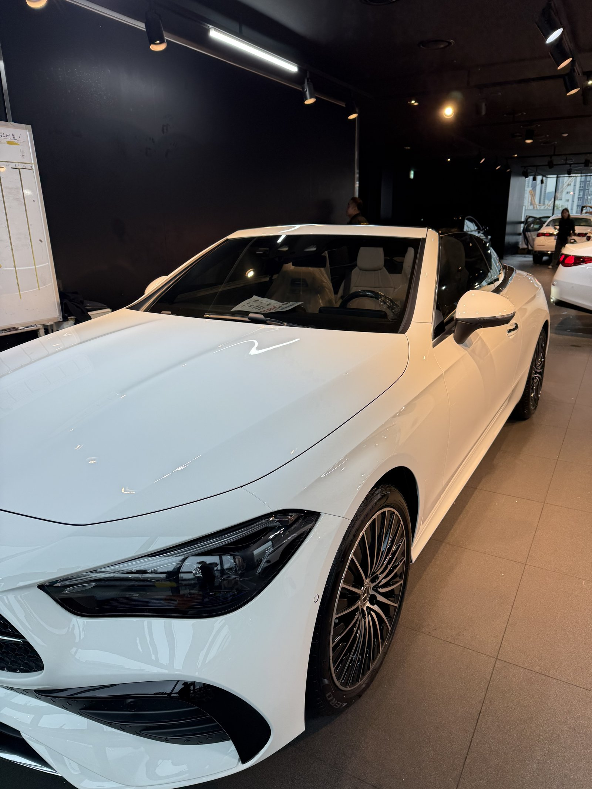
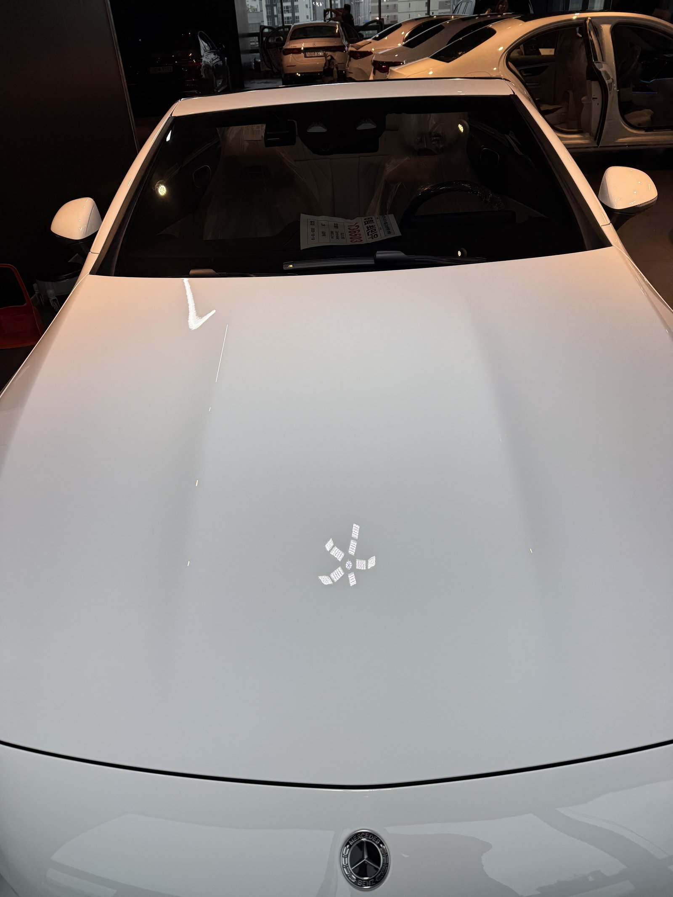
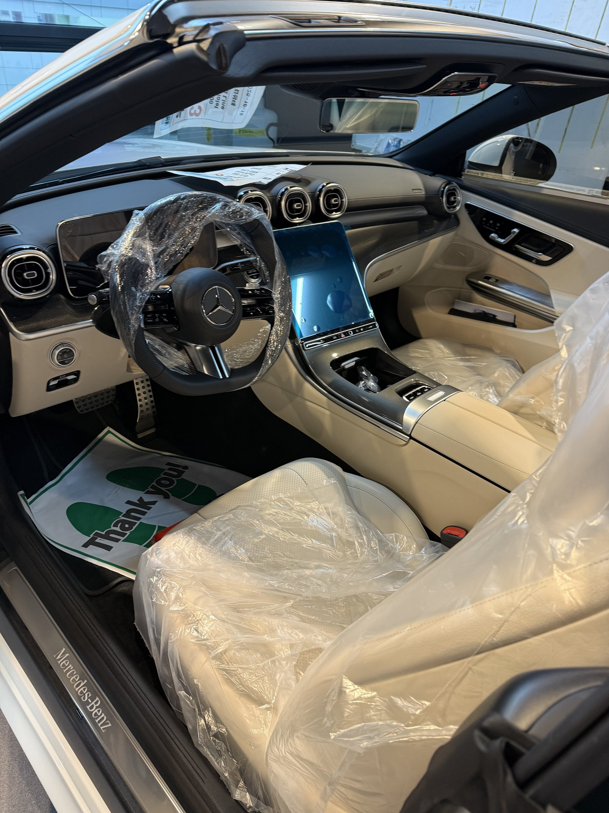
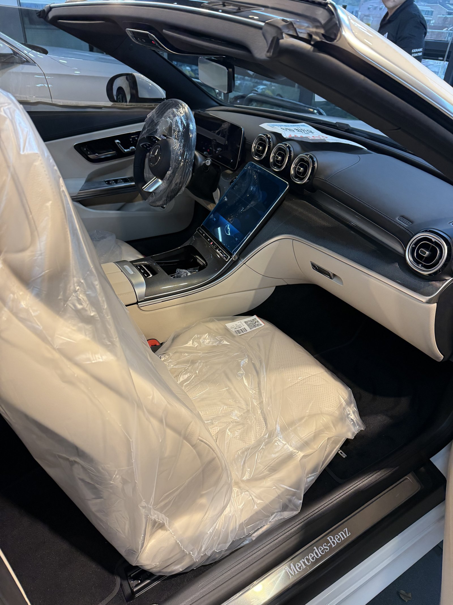
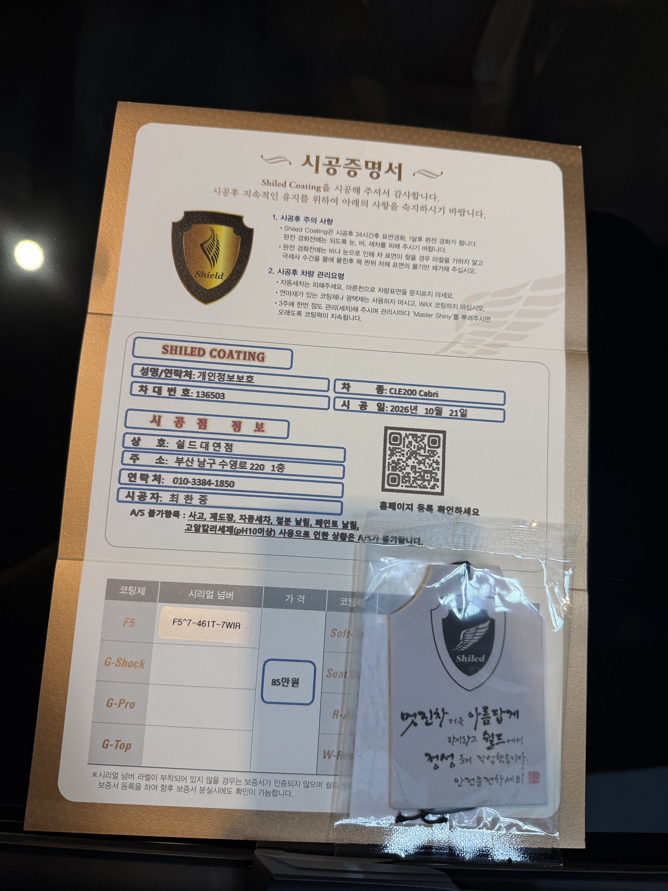

벤츠 CLE200 카브리올레, 백색 신차입니다.
소프트탑을 열어 둔 채 매장에 들어왔습니다.
출고 전 F5로 진행한 부산 유리막코팅 기록입니다.

지붕을 연 오픈카는 무엇을 먼저 보나요?
윈드실드 프레임과 트렁크 리드 경계입니다.
지붕을 열면 차체 윗선이 그대로 드러납니다.
앞유리 프레임 끝과 트렁크 리드 앞쪽은 평소 소프트탑에 가려 있던 자리입니다.
이 경계에 코팅제가 남지 않도록 따로 확인했습니다.



흰 오픈카 뒤쪽은 어떻게 마무리하나요?
CLE200 카브리올레는 트렁크 리드가 길고 낮습니다.
가로로 이어진 테일램프 아래로 라인이 한 줄 지나갑니다.
흰색은 이런 라인에 잔여물이 남으면 얼룩처럼 보입니다.
램프 주변과 CLE 200 레터링 주변을 따로 닦아냈습니다.



기술자의 팁
오픈 주행 뒤에는 실내에도 먼지가 들어옵니다. 세차 때 시트와 대시보드 윗면을 마른 극세사로 한 번 털어주시면 베이지 실내가 오래 밝게 유지됩니다.
CLE200 카브리올레에 F5를 올린 이유
F5는 색감의 깊이와 글로시함에 특화된 코팅입니다.
흰색은 광이 올라가면 차체 곡면의 윤곽이 또렷해집니다.
보닛의 파워돔 라인이 조명 아래에서 선명하게 드러납니다.
코팅제는 대표가 직접 개발·제조한 제품입니다.
이번 부산 유리막코팅은 F5 싱글로 진행했습니다.


시공증명서도 함께 드립니다
모든 시공 차량에 시공증명서를 드립니다.
차종·시공일·코팅제 시리얼 번호가 적혀 있고, 홈페이지에 등록해 보증을 받으실 수 있습니다.

차종·시공일·코팅제 시리얼이 기재된 시공증명서
자주 묻는 질문
Q. 오픈카 소프트탑에도 유리막코팅을 하나요?
A. 이번 시공은 도장면 F5 유리막코팅입니다. 원단 소프트탑은 도장면과 소재가 달라 전용 관리 방식으로 따로 상담해 드립니다.
Q. 흰색 차량에 F5를 고른 이유는 무엇인가요?
A. F5는 글로시함과 색감 깊이에 특화된 코팅입니다. 흰색은 광이 올라가면 곡면 윤곽이 또렷해져 차체가 더 단단해 보입니다.
Q. 베이지 실내는 따로 관리가 필요한가요?
A. 밝은 시트는 청바지 이염이 생기기 쉽습니다. 오픈카는 햇빛에도 직접 노출되니 걱정되시면 시트코팅을 함께 상담해 드립니다.
Q. 왜 출고 전에 코팅하나요?
A. 도장면이 가장 깨끗할 때 올린 코팅이 가장 오래갑니다. 운행과 세차로 잔기스가 생기기 전에 입혀두는 것이 핵심입니다.
Q. 쉴드광택 위치와 예약은 어떻게 하나요?
A. 부산 남구 유엔로220 1F 쉴드광택입니다. 예약·상담은 010-3384-1850, 대표 최한중이 직접 상담하고 책임 시공합니다.
새 차일수록 시작점이 다릅니다. 가장 깨끗할 때 입혀두십시오.
제품을 직접 만드는 사람이 직접 시공합니다.
부산에서 신차 유리막코팅을 고민 중이시면 편하게 연락 주십시오.
어떤 차를 타냐보다 어떻게 타냐가 중요합니다~!
시공 중에는 전화를 받지 못할 때가 많습니다.
카카오톡으로 차종과 원하시는 시공을 남겨주시면 확인 후 답변드립니다.
쉴드광택 · 부산 남구 유엔로220 1F · 대표 최한중